<title>Sentrum Design Directions</title>
<style>
/* Layout: one column index, four direction rows with fold thumbnails (desktop + mobile) */
:root{--bg:#F3F4F2;--fg:#11181E;--mute:#5B646B;--rule:#D3D7D4;--accent:#0A6D9B;--card:#FFFFFF;
--f:"Instrument Sans",system-ui,-apple-system,Segoe UI,sans-serif}
@media (prefers-color-scheme:dark){:root:not([data-theme="light"]){--bg:#0E1419;--fg:#E7ECEF;--mute:#93A1AB;--rule:#26323B;--accent:#5CC3EE;--card:#151D24;color-scheme:dark}}
:root[data-theme="dark"]{--bg:#0E1419;--fg:#E7ECEF;--mute:#93A1AB;--rule:#26323B;--accent:#5CC3EE;--card:#151D24;color-scheme:dark}
@font-face{font-family:"Instrument Sans";src:url(assets/fonts/instrument-sans-latin-400-normal.woff2) format("woff2");font-weight:400}
@font-face{font-family:"Instrument Sans";src:url(assets/fonts/instrument-sans-latin-600-normal.woff2) format("woff2");font-weight:600}
body{background:var(--bg);color:var(--fg);font:400 16px/1.55 var(--f)}
main{max-width:1180px;margin:0 auto;padding-inline:clamp(16px,4vw,48px);padding-block:40px 64px}
h1{font-size:clamp(28px,4vw,44px);letter-spacing:-.025em;line-height:1.05;text-wrap:balance}
.intro{color:var(--mute);max-width:62ch;margin-top:12px}
.row{display:grid;grid-template-columns:minmax(0,5fr) minmax(0,7fr);gap:28px;padding-block:32px;border-top:1px solid var(--rule);margin-top:32px}
.row h2{font-size:24px;letter-spacing:-.015em}
.row p{color:var(--mute);margin-top:8px;max-width:48ch}
.row a.open{display:inline-block;margin-top:16px;font-weight:600;color:var(--accent);text-decoration:none;border-bottom:1.5px solid currentColor}
.shots{display:grid;grid-template-columns:minmax(0,3.2fr) minmax(0,1fr);gap:12px;align-items:start}
.shots img{width:100%;height:auto;display:block;border:1px solid var(--rule);background:var(--card)}
.rec{margin-top:40px;padding:20px;border:1px solid var(--rule);background:var(--card)}
@media (max-width:760px){.row{grid-template-columns:minmax(0,1fr)}}
</style>
<main>
  <h1>Sentrum — homepage directions</h1>
  <p class="intro">Each opens as a full working homepage (desktop and mobile). All use the original Sentrum logo and only facts from the current site. Pick one; the build continues from it.</p>
  <section class="row"><div><h2>1 · Cross-Section</h2><p>The whole offer drawn as one building. Scroll and each system lights up in place: networks, security, comms &amp; AV, power, fabrication.</p><a class="open" href="design-1.html">Open direction 1 →</a></div><div class="shots">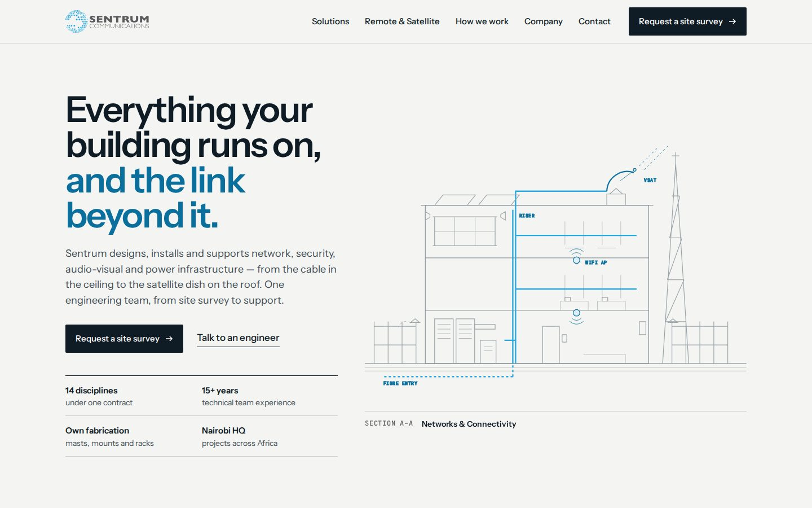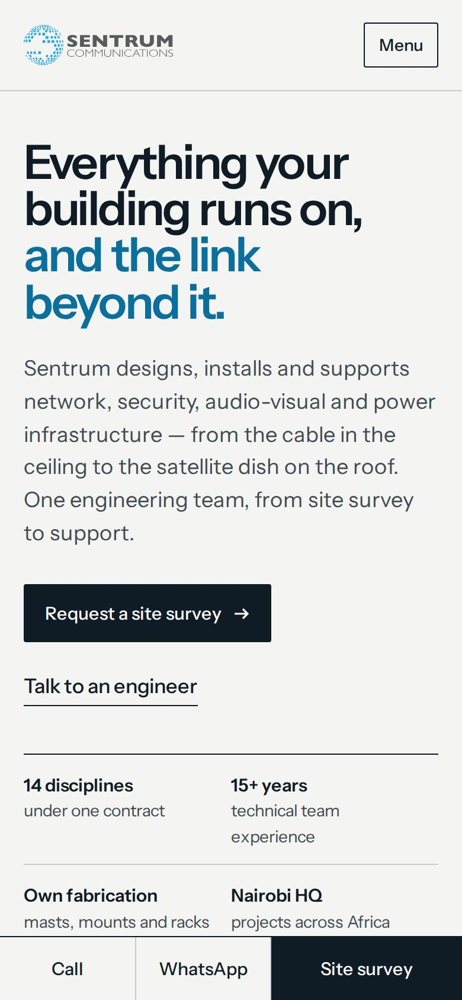</div></section>
  <section class="row"><div><h2>2 · Register</h2><p>A procurement-grade technical document: company summary sheet and a filterable register of all 14 disciplines.</p><a class="open" href="design-2.html">Open direction 2 →</a></div><div class="shots">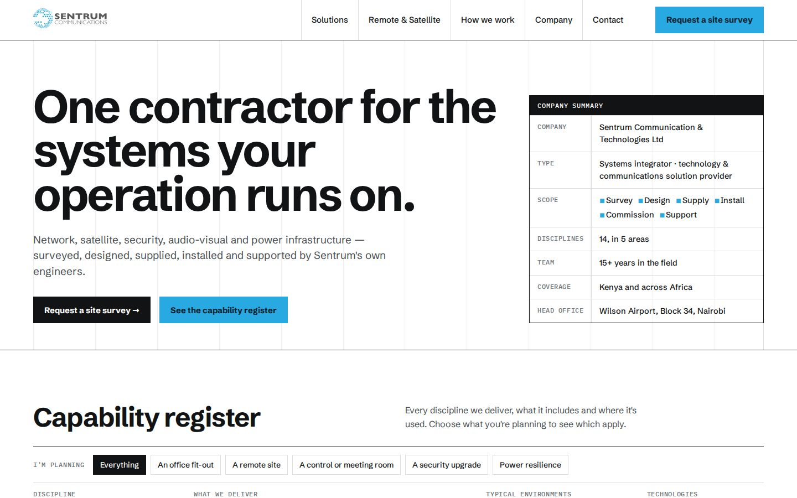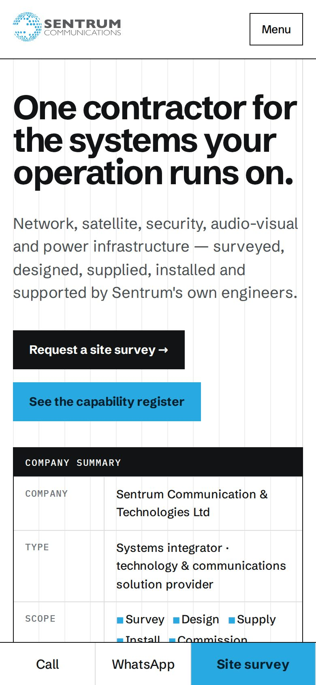</div></section>
  <section class="row"><div><h2>3 · Footprint</h2><p>Inside the building and beyond the fibre. East Africa map, Nairobi HQ, and an animated signal path from satellite to meeting room.</p><a class="open" href="design-3.html">Open direction 3 →</a></div><div class="shots">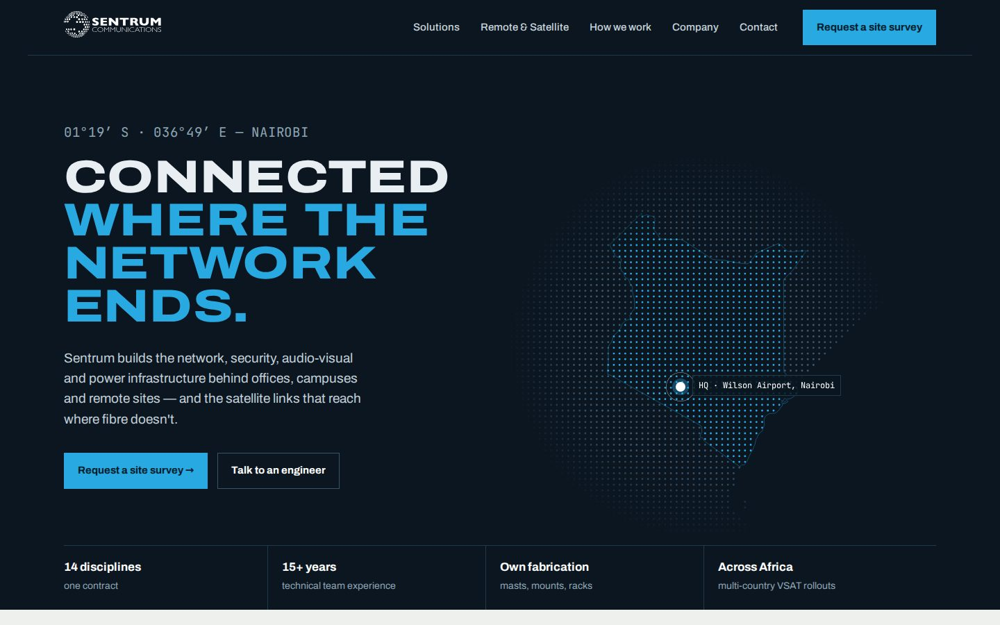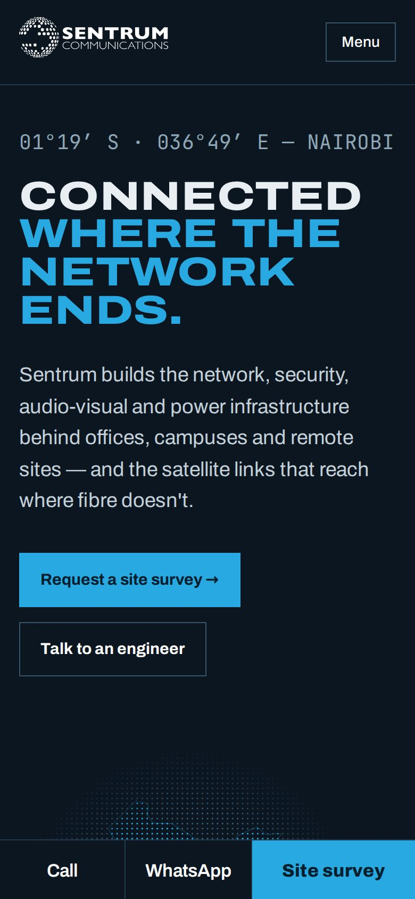</div></section>
  <section class="row"><div><h2>4 · Broadsheet</h2><p>An editorial argument: one claim per chapter, technical proof in the margin, large photography plates.</p><a class="open" href="design-4.html">Open direction 4 →</a></div><div class="shots">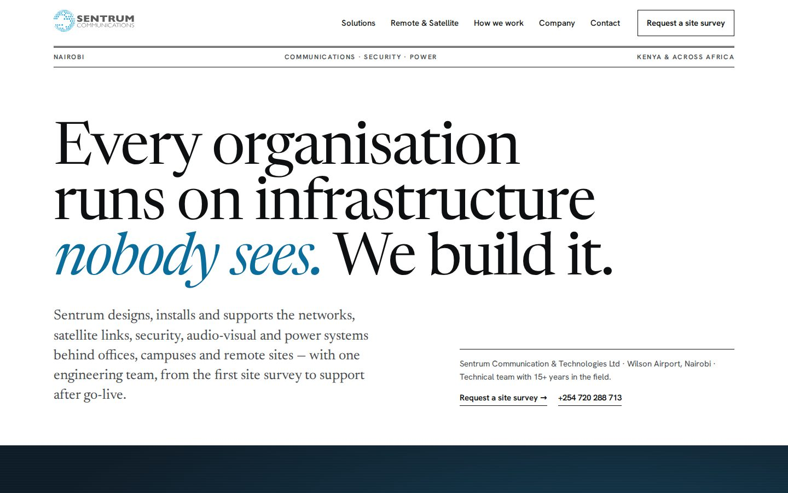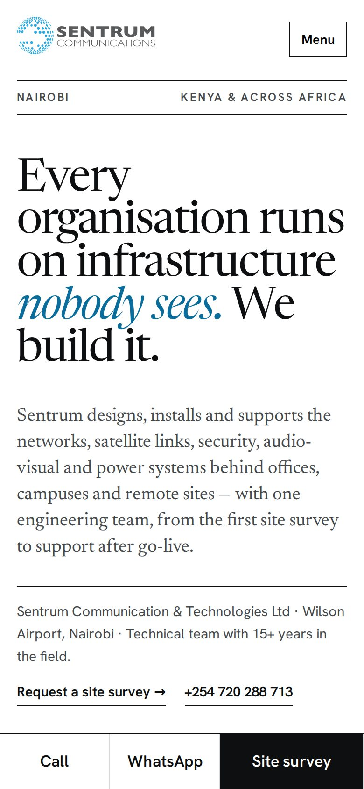</div></section>
  <p class="rec"><strong>Recommendation:</strong> Direction 1, using Direction 2's register as the Solutions index page. Direction 3 if remote and VSAT work should lead the brand.</p>
  <h2 style="margin-top:56px;font-size:28px;letter-spacing:-.02em">Round 2 — Cross-Section × signal path</h2>
  <p class="intro">Text now swaps in place on the drawing (no half-page scrolling), and the signal travels through the building.</p>
  <section class="row"><div><h2>5 · Live Section</h2><p>The whole stage pins. Scrolling swaps the text in place, lights each system and advances the signal from satellite to room. Stepper to jump.</p><a class="open" href="design-5.html">Open direction 5 →</a></div><div class="shots">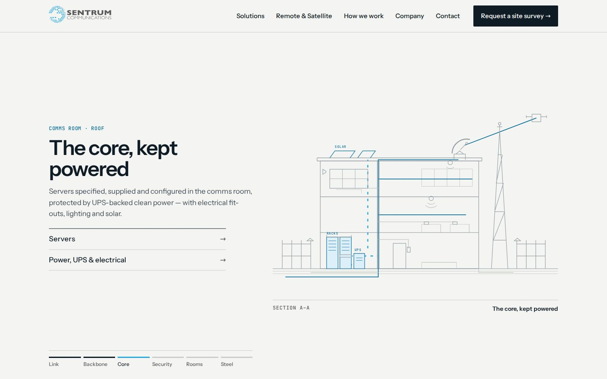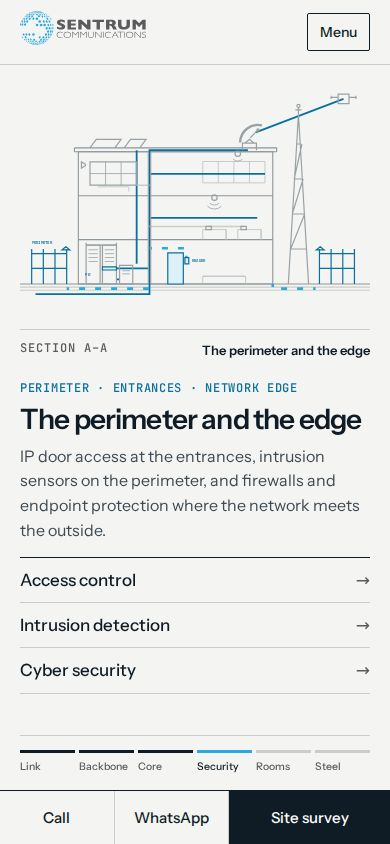</div></section>
  <section class="row"><div><h2>6 · Night Section</h2><p>No scroll-jacking. A system index beside the night drawing auto-advances until you interact; East Africa map for remote work below.</p><a class="open" href="design-6.html">Open direction 6 →</a></div><div class="shots">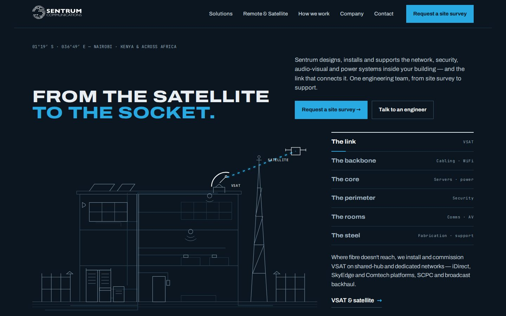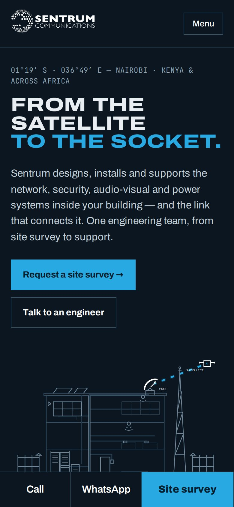</div></section>
  <section class="row"><div><h2>7 · Signal Line</h2><p>A pinned panorama: the camera follows the signal from a remote mast, through the satellite, into the head office.</p><a class="open" href="design-7.html">Open direction 7 →</a></div><div class="shots">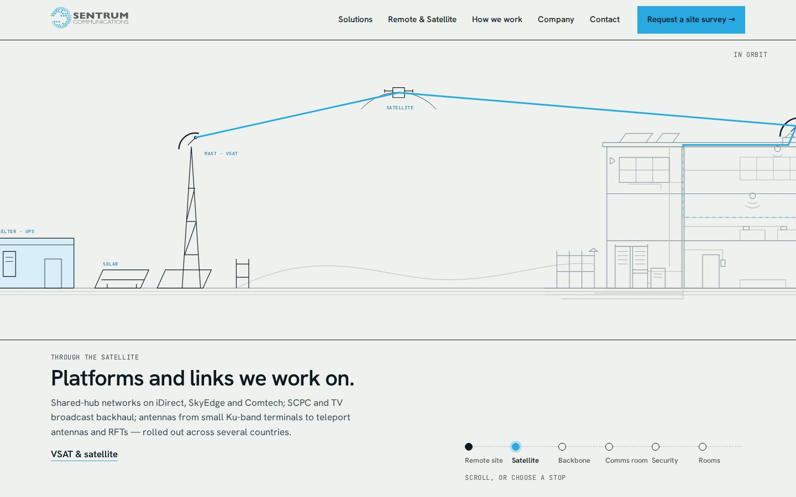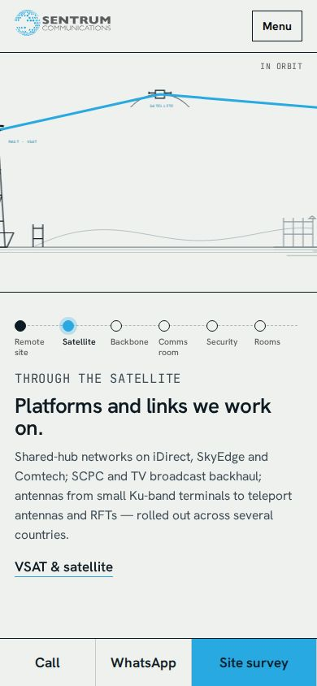</div></section>
  <p class="rec"><strong>Recommendation (round 2):</strong> Direction 5. Direction 7 if the remote/VSAT story should lead.</p>
</main>
